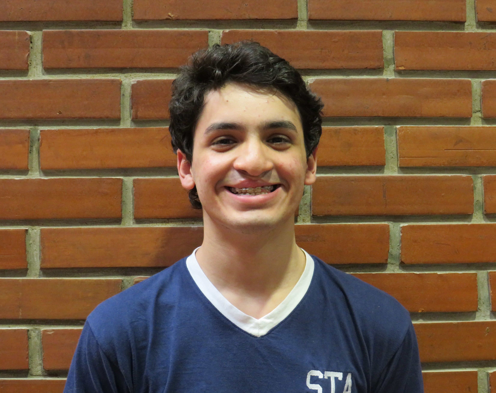
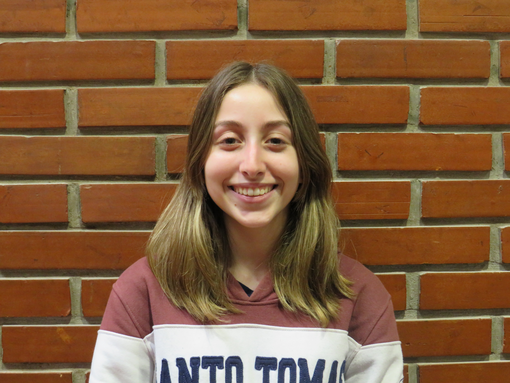

Integrantes
de quinto año para que conformen junto a él la “Mesa Chica”. La función de este organismo (la Mesa Chica) es ayudar al director a organizar a los chicos, enseñar las partes de
los arreglos, informar de algún inconveniente y actuar como guías para los más chicos. Cuenta con seis puestos, de los cuales cuatro son jefes de cuerda (bajo, tenor, contralto
y soprano), hay un/a subdirector/a que actúa como la mano derecha del director y reemplazo en caso de ausencia, y un/a asistente general quien se encarga de tomar lista, organizar
los ensayos y de las redes sociales. A su vez, todos los integrantes del coro pasan por una audición antes de entrar en dónde el director puede escuchar de forma más precisa el
registro de cada uno. Esto desemboca en la separación por cuerdas: bajo, tenor , contralto y soprano. Las dos primeras cuerdas son de hombres, perteneciendo a bajo los de registro
más grave y a tenor los de registro más agudo. Las siguientes son de mujeres, formando parte de contralto las de registro grave (siendo mayormente la “leading voice”) y de soprano
las de agudo. A su vez, el coro cuenta con una variedad de instrumentos que son tocados por alumnos: guitarras (criolla, acústica y eléctrica), un bajo, un cajón peruano, un violín;
y un teclado que usualmente se utiliza para el warming up. Actualmente el número de integrantes disminuyó ya que por la pandemia del 2020 y los ensayos virtuales muchos decidieron
no seguir participando del coro. A continuación les presentamos a los actuales miembros del Coro Santoto.

